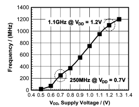

Power Management Introduction
Power management is a critical and complex topic in a system which aims at spending optimal energy to execute a workload optimally. It also means that, we neither overspend power which doesn't add any value (no improvement in workload efficiency) not underspend power which ends up in starvation of workload. The right balance will ensure that the performance per watt is high.

Total power burnt varies based on input voltage and frequency, there are other factorts like temperature, capacitance of the circuit also impacts power. But for simplicity lets take only voltage and frequency.
P = V^2 * F
As per above formula, Power burnt is more when the chiplet/SoC is operating at high voltage and frequency.
Power management is nothing but just playing around with Voltage and Clocks, but by taking several inputs from the system (like stalls, idles, temperature, latency, etc.) periodically. Though it sounds simple, the frequency at which this sampling needs to be done is quite high to ensure that we take necessary corrective actions at appropriate time.
Power management can be divided in to below categories.
* Active power management
* Thermal Management
* Idle power Management